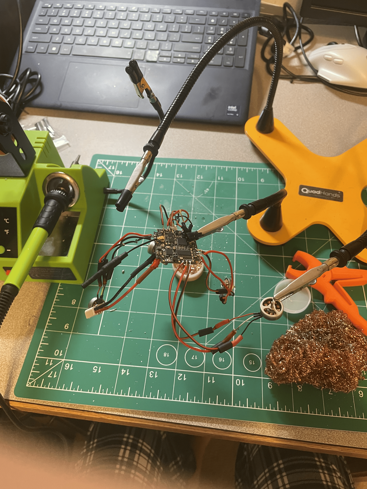

$59 MEP's King Micro FPV Drone Challenge
FInished Micro 1s FPV Drone for the MEP's King Challenge >$59.

Project details
Overview
Design and assembly of a $57.93 micro FPV toothpick drone using carefully selected budget components and AliExpress welcome deals. 3 The completed build undercut the $59 MEPS King 59 reference build by $1.07 while using a different flight controller, a 3D-printed TPU canopy, and custom-printed battery mounts. 4 The drone was configured in Betaflight 4.4.3 using DSHOT300 and the CRSF protocol, then successfully tested through a recorded flight demonstration. 5 The full build, component specifications, sourcing information, and future documentation are published through the project's GitHub repository
Key features / highlights
- 85mm True-X BETAFPV Twiglet Mini 2-inch frame
- T-Motor F4 AIO with integrated ELRS receiver, 6A ESC, and video transmitter
- 1103 15000KV motors supporting 1S and 2S batteries
- CADDX Ant Nano FPV camera
- Custom 3D-printed battery mounts
- 3D-printed TPU canopy with a 40-degree camera angle
- Configured with Betaflight 4.4.3, DSHOT300, and CRSF
- Build documentation and flight demonstration published online
Tech & tools
2-
3
- Betaflight 4.4.3 4
- Betaflight Configurator 5
- ELRS 2.4GHz 6
- CRSF Protocol 7
- DSHOT300 8
- STM32F411 9
- FPV Video Systems 10
- Brushless Motors 11
- LiPo Batteries 12
- 3D Printing 13
- TPU 95A 14
- Custom Battery Mounts 15
- Electronics Assembly 16
- Component Sourcing 17
- GitHub Documentation 18
My role
I independently sourced, assembled, configured, and tested the micro FPV drone. I selected compatible components within a strict budget set by the challenge, integrated the electronic and radio systems, produced custom 3D-printed parts, configured the aircraft in Betaflight, and documented the complete build on GitHub.